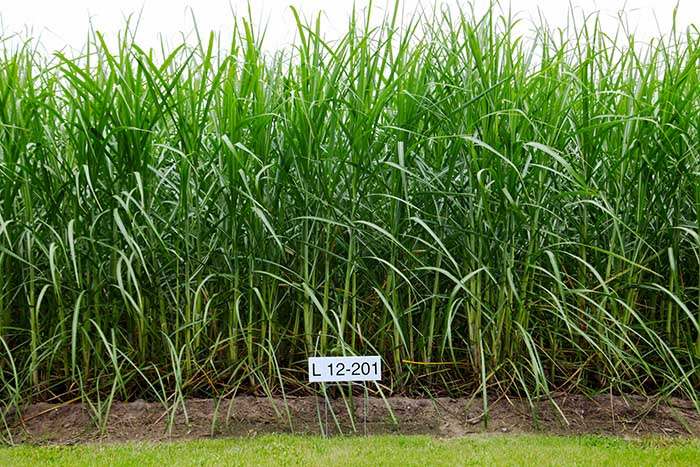
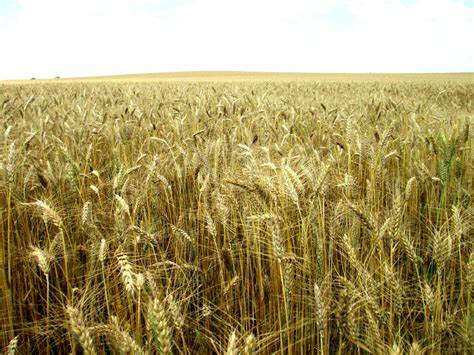

  
  <!-- 
NAME @: Nimish Dalvi 
TOPIC @: Crop Classification Model Deployment
DATE @: 15/02/2022 
-->

  
  <!-----------------------------  BASE SECTION  ----------------------------------->

{% extends "base.html"%}

  <!-------------------------------------------------------------------------------->

{% block content %}


  <!---------------------------  HOME BODY SECTION   ------------------------------>

<!-- Add a background color and large text to the whole page -->
<div class="   w3-pale-yellow  w3-large">

    <!-- About Container -->
    <div class="w3-container" id="about">

        <div class="w3-content" style="max-width:800px">

            <h5 class="w3-center w3-padding-32"><span class="w3-tag w3-wide">ABOUT THE PROJECT</span></h5>
            
            <h3>About the project : </h3>

            <br>

            <p> Human has been doing agriculture for many centuries and over time a variety of 
                different crops have been cultivated. Worldwide there are varieties of crops 
                cultivated over ages. Each variety has its own distinguishing features over a 
                broad spectrum of height, color, structure, number of seeds, etc. In taxonomy, 
                there are various species, types of crops. The crops can be classified in various 
                ways. Appearance is the first thing that will help in classification. Crops need 
                to be identified as each crop needs specific treatment. We will try to use 
                Artificial Neural Networks(ANN) to identify crops from images of different crops.
            </p>

            <br>

            <h3>Supported Crops : </h3>

            <br>

            <p>
                Out of thousands of varieties of crops we will create the classifier model on few 
                of the Crop varieties. The following crops can be classified :
            </p>

            <style>
                .images-container {
                    display: flex;
                    justify-content: center;
                    align-items: center;
                }

                .images-container img {
                    height: 150px;
                    width: 150px;
                    margin-left: 5px;
                    margin-right: 5px;
                }
            </style>

            <div class="images-container" id="crop_images">
                
                
                
                
                
            </div>  

            <table align="center" width=100% >
                <!-- <tr>
                    <td width = 20%>
                        
                    </td>
                    <td width = 20%>
                        
                    </td>
                    <td width = 20%>
                        
                    </td>
                    <td width = 20%>
                        
                    </td>
                    <td width = 20%>
                        
                    </td>
                </tr> -->
                <tr>
                    <td width = 20% height = "20">
                        <div align="center">
                            <font face = "Georgia" size = "3" color="Green"><b>1. Jute</b></font>
                        </div>
                    </td>
                    <td width = 20% height = "20">
                        <div align="center">
                            <font face = "Georgia" size = "3" color="Green"><b>2. Maize</b></font>
                        </div>
                    </td>
                    <td width = 20% height = "20">
                        <div align="center">
                            <font face = "Georgia" size = "3" color="Green"><b>3. Rice</b></font>
                        </div>
                    </td>
                    <td width = 20% height = "20">
                        <div align="center">
                            <font face = "Georgia" size = "3" color="Green"><b>4. Sugarcane</b></font>
                        </div>
                    </td>
                    <td width = 20% height = "20">
                        <div align="center">
                            <font face = "Georgia" size = "3" color="Green"><b>5. Wheat</b></font>
                        </div>
                    </td>
                </tr>
            </table>  
        
    
        </div>
    </div>

<br>
<br>

  <!-----------------------------  FORM SECTIOIN  ----------------------------------->

    <div class="w3-content" id="form1" style="max-width:800px">

    <center>
    <h1>Please upload the crop image below</h1>
    </center>
    <br>
    <hr>

    <form method="POST" enctype="multipart/form-data">
        {{ form.hidden_tag() }}
        {{ form.photo }}

        {% for error in form.photo.errors %}
            <span style="color:red;">{{ error }}</span>
        {% endfor %}
        {{ form.submit }}
    </form>

    </div>

  <!----------------------------------------------------------------------------->


</div>

{% endblock %}

  <!-----------------------------  THE END  ----------------------------------->